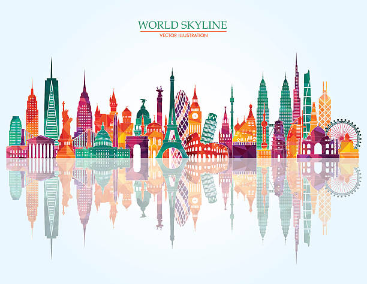

The Eiffel Tower is a wrought-iron lattice tower on the Champ de Mars in Paris, France. It is named after the engineer Gustave Eiffel, whose company designed and built the tower from 1887 to 1889.
The pyramids of Egypt are ancient masonry structures built as tombs for pharaohs and their consorts during the Old and Middle Kingdom periods. The most famous are located at Giza, near Cairo, and include the Great Pyramid, the Pyramid of Khafre, and the Pyramid of Menkaure. These pyramids are part of the Giza pyramid complex, a UNESCO World Heritage site.
The Statue of Liberty National Monument is a United States national monument comprising Liberty Island and Ellis Island in the states of New Jersey and New York.
The Great Wall of China is a series of fortifications in China. They were built across the historical northern borders of ancient Chinese states and Imperial China as protection against various nomadic groups from the Eurasian Steppe.
Machu Picchu is an Incan citadel set high in the Andes Mountains in Peru, above the Urubamba River valley. Built in the 15th century and later abandoned, it’s renowned for its sophisticated dry-stone walls that fuse huge blocks without the use of mortar, intriguing buildings that play on astronomical alignments and panoramic views. Its exact former use
remains a mystery.